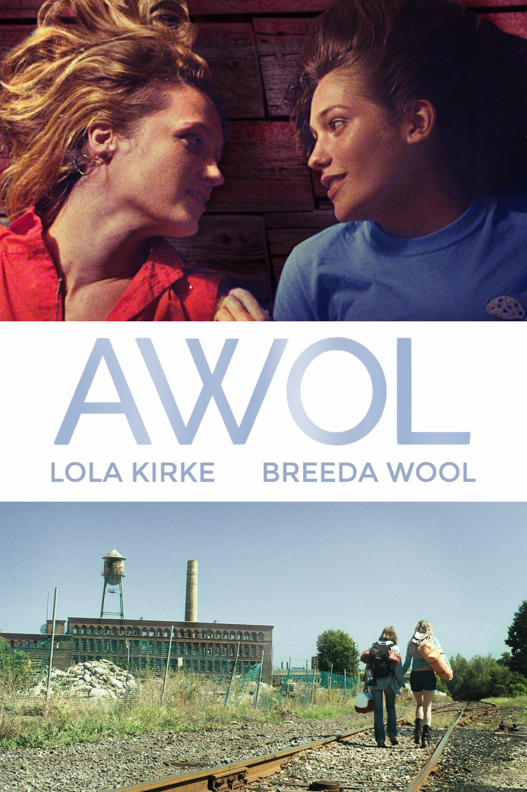

AWOL
2/10
This is the white trash lesbian movie that no one asked for. What does AWOL stand for? AWful Odd Lesbian movie? Another cheating lesbian movie! Rayna’s trailer was so dirty. Gross. The sex scenes are way too brief. When there’s actually a real sex scene longer than 5 seconds, they get caught. Homophobic. Rayna is trashy. The tent sex scene was disappointing. All we see is them kissing and the shadows of them taking off their bras. What the fuck. The car sex scene was so uncomfortable. What was that?? I am just taken aback. Then, when Joey is hooking up with Haley, the scene is over, just like that! Cut away to Joey being outside. Bullshit. Rayna is a backstabber! The ending was horrible. This movie sucked.